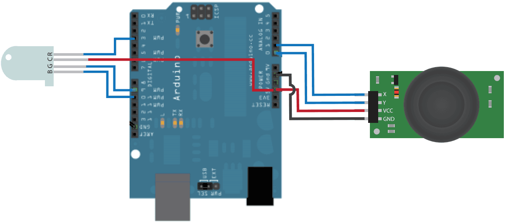

You can use Joystick in some control occasion, such as control a toy car.
This demo will show you how to use joystick, and we need a Rgb Led else, when joystick in different location, Rgb Led will show different color.
Hardware Required：
Circuit：
Joystick connect to A0, A1, RGB LED connect to D3, D9 and D10.

Code:
Open Arduino IDE, click File -> Sketchbook -> joystick.
参考连接
Copyright (c) 2008-2016 Seeed Development Limited (www.seeedstudio.com / www.seeed.cc)